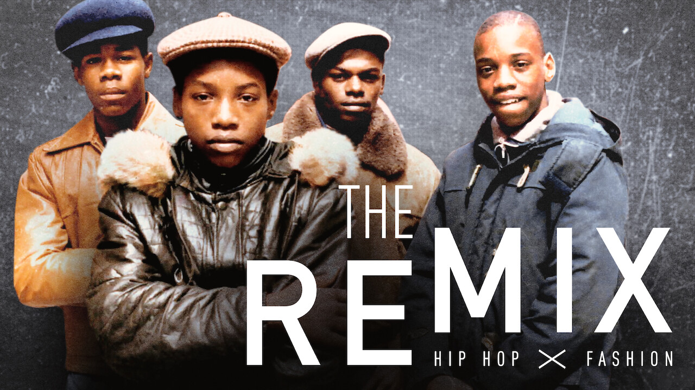
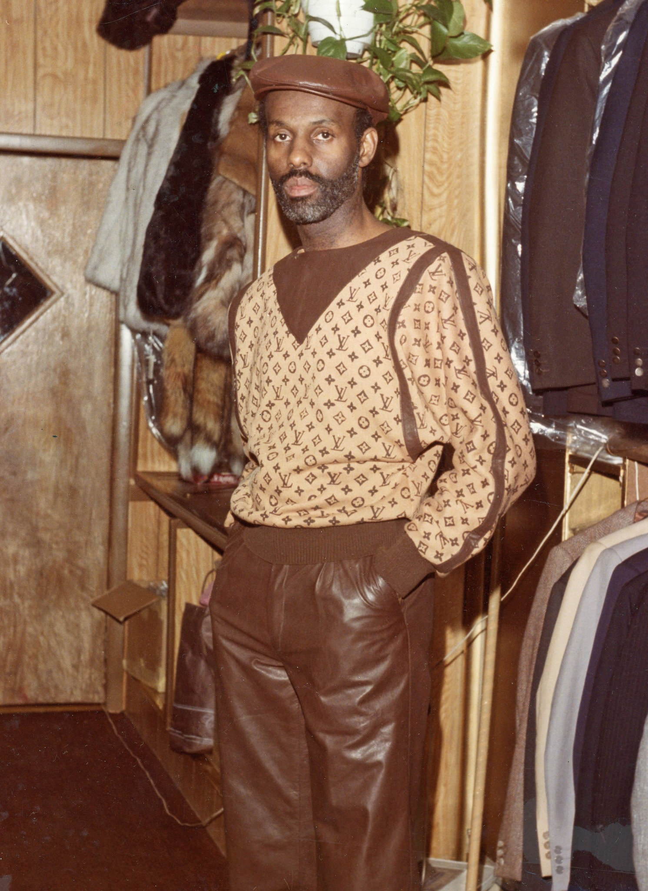
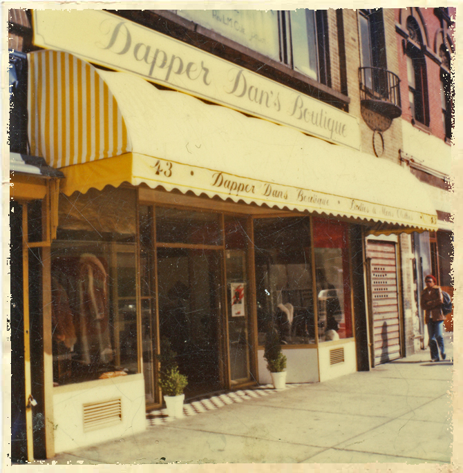
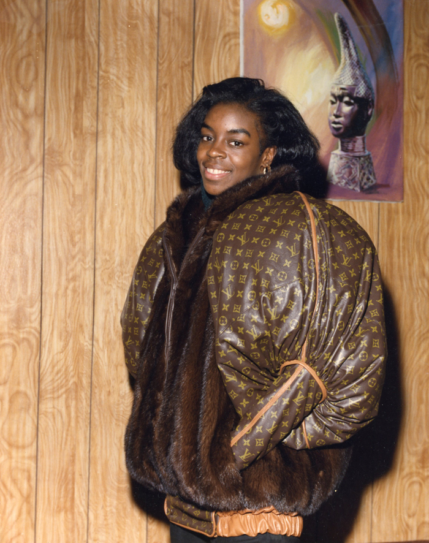
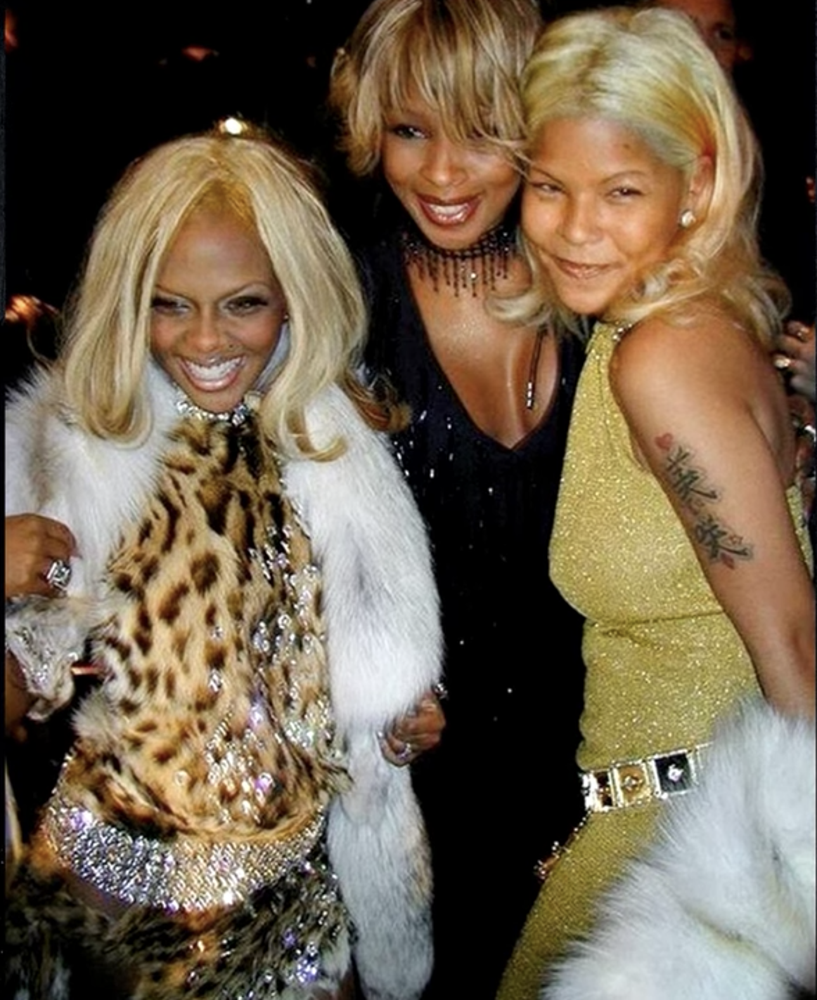
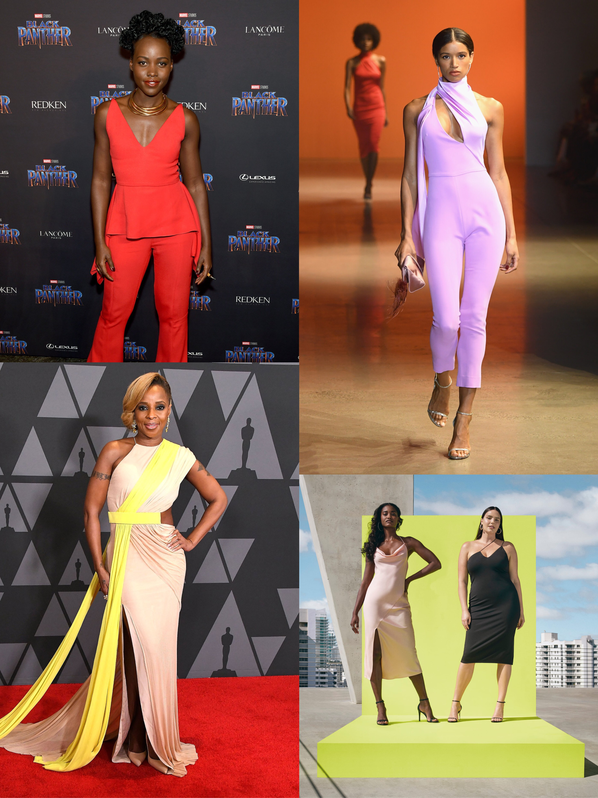
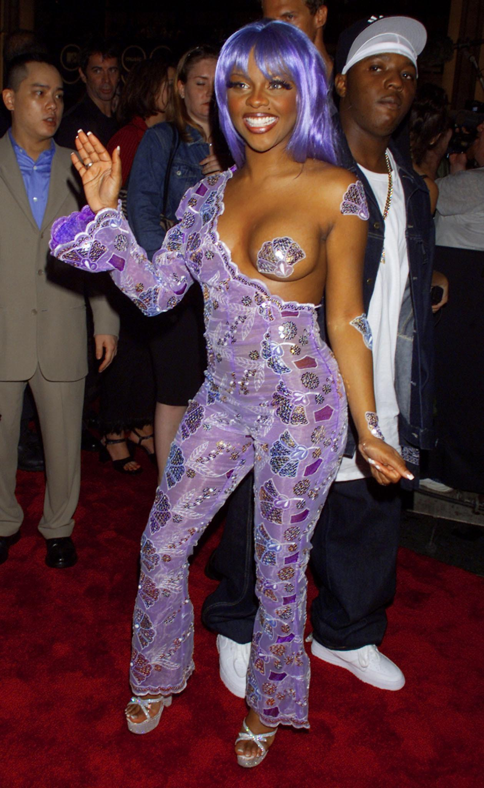

The Remix: Hip-Hop X Fashion is a Reminder to Support Black People in Fashion.

The Remix: Hip-Hop X Fashion is a film that profiles several Black visionaries in the hip-hop fashion space. The film highlights how Black fashion in American hip-hop has and continues to influence global fashion culture. It also calls attention to the need for society to recognize, financially support, and uplift Black people in fashion.
 Film poster for The Remix: Hip-Hop X Fashion.
Black people in fashion often start popular trends but have precarious careers that are not able to weather changes that negatively affect their work. The popularity of Black fashion creations does not translate to the longevity of Black-owned fashion businesses.
 Daniel Day, also known as Dapper Dan, in a Louis Vuitton monogrammed outfit.
 Dapper Dan's Harlem Boutique.
In the 1980s, Daniel Day, better known as Dapper Dan, opened a boutique in Harlem that specialized in custom-made clothing. Dapper Dan’s trademark was to make streetwear, hip-hop style pieces that consisted of bold, luxury monograms from brands like Fendi, MCM, Louis Vuitton, and more. Dapper Dan’s business was popular among hustlers, street people, and Black celebrities. He made clothing for people like LL Cool J, Salt-N-Pepa, Mike Tyson, and Bobby Brown.
 Olympic gold and silver medalist, Diane Dixon, in a Dapper Dan creation.
Despite the success of his 1980s boutique, its survival relied on the boutique being relatively unknown, which was not a long-term, sustainable model. In 1988 Dapper Dan's undercover operations were exposed when Mike Tyson got in a fight at his store. The press put Dapper Dan’s business in the media, and consequently, law enforcement spotlight. After the publicity, Dapper Dan started continuously getting raided by the authorities due to copyright infringement claims by the luxury brands that he used in his custom-made clothing. Dapper Dan was not working with any of these luxury brands. He had no legal grounds to create the monogrammed pieces he sold. As a result, he took his business underground and traveled from city to city to sustain it.
 Misa Hylton with Mary J. Blige and Lil' Kim.
Dapper Dan is just one example of how precarious the careers of Black people in fashion are. The film also covers the story of stylist Misa Hylton, who worked with Lil’ Kim, Mary J. Blige, and many other prominent people in hip-hop. Although Hylton was responsible for some of the most iconic looks in pop culture, the advent of digital music piracy in the early 2000s drained the music industry of money and took job opportunities away from Hylton. Hylton almost had to give away her business and became homeless for some time.
 Cushnie was worn by celebrites, shown at NYFW, and collaborated with Target, yet could not survive the pandemic.
More recently, Carly Cushnie, a Black woman designer, announced that her brand, Cushnie, is closing due to the effects of COVID-19. The news came as a shock because the brand has been quite popular. Cushnie was featured in multiple magazines, worn by celebrities, shown at NYFW, and this summer launched a collaboration with Target.
Popularity is not enough to support Black designers. It does not provide the security that designers need to sustain a business in an ever-changing economy. Black people in fashion need to connect with support systems that can weather economic hardship and uncertainty. We need systemic change that allows Black people in fashion to either connect with larger fashion establishments or create new ones that can help Black people in fashion survive in the long-term.
 An example of deconstruction: Redman recreating a ski outfit for to fit his persona.
An example of deconstruction: Redman recreating a ski outfit for to fit his persona.
Black people also have a unique brand of creativity that is appropriated by non-Black people in fashion and rarely credited. The film discusses how Black people have historically practiced the idea of deconstruction, which is a behavior where one takes a trend that has been established and recreates and reclaims it to fit their comfort, needs, and mood. Deconstruction is the driving force of hip-hop fashion. One example is the reclamation of Polo Ralph Lauren by hip-hop artists. While it is a reaction to being excluded from mainstream fashion, interestingly, the mainstream fashion industry steals these deconstructed contributions of Black people and claims it as its own.
 April Walker (middle), the founder of Walker Wear.
April Walker (middle), the founder of Walker Wear.
In 1991, April Walker founded the clothing brand Walker Wear which made custom clothing pieces for mostly new money rappers. Walker Wear made clothing pieces that fit the needs of their customers; the brand would fulfill requests for deep pockets and bottoms that versatility fit Timberland boots. The most successful creation of the brand was the Rough and Rugged suit that was inspired by the needs and desires of customers. Huge rappers like Tupac and Notorious B.I.G. wore the brand, and it started growing globally. Unfortunately, as the brand grew, other brands stole its signature look. The theft and the lack of credit given to April Walker caused her to become disenchanted and eventually shut down her brand. She recognized that she was in a cycle where larger fashion brands could steal her ideas and not allow her to benefit from the hard work she put into developing those ideas.
 Lil' Kim at the 1999s MTV VMAs, styled by Misa Hylton.
Misa Hylton has also had her most standout creations stolen by the mainstream fashion industry. Hylton has created some of the most iconic looks in pop culture, such as Lil' Kim’s purple 1999s MTV VMAs outfit and the 'Crush on You,' music video monochrome outfits. She is responsible for changing the looks of male R&B singers to have more of a hip-hop appearance and of female hip-hop and R&B artists to be more feminine.
 Misa Hylton wearing Pyer Moss for Garage Magazine.
Misa Hylton wearing Pyer Moss for Garage Magazine.
However, in the film, we learn that Hylton had a hard time expanding out of the hip-hop and R&B styling space. When big fashion brands would do photoshoots of her clients, they would usually have another stylist execute her style or only bring her on the shoot as a consultant. To this day, Hylton is still not properly credited for her contributions to fashion and culture. Her styling has revolutionized mainstream fashion and is responsible for the careers of many figures in pop culture.
Black people have a unique type of creativity that needs to be protected. Black fashion is a way for Black people to escape racism. It is a space where Black people can express their pain and temporarily escape from it. Black people in fashion deserve the world. They have made monumental contributions to fashion with little resources and support. It is time for our culture to look back and acknowledge how Black people have shaped the fashion industry. It is also time for our culture to look forward and come up with ways to uplift current Black creatives in fashion. We need to have a cultural shift where hip-hop, ghetto, hood, and all Black fashion is considered high fashion and Black creatives are given a chance to participate in mainstream fashion.